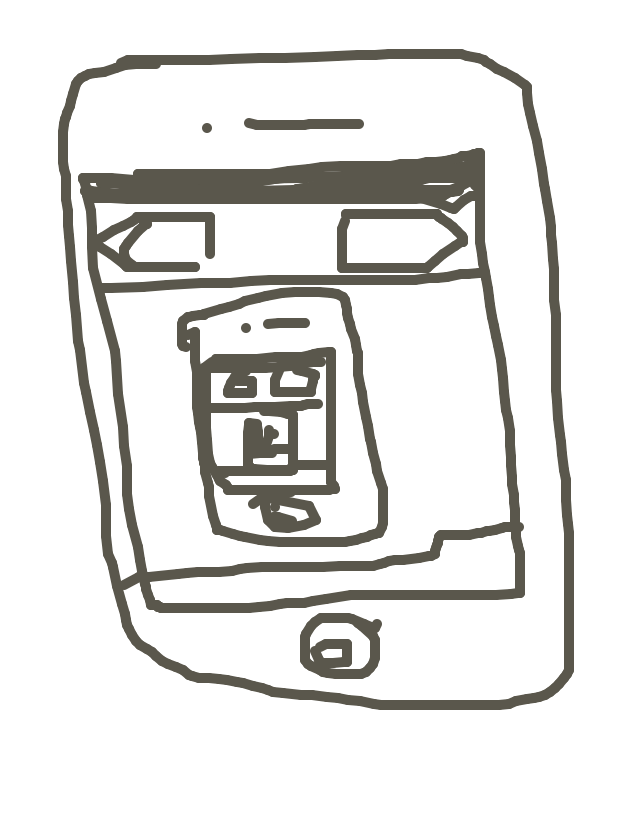
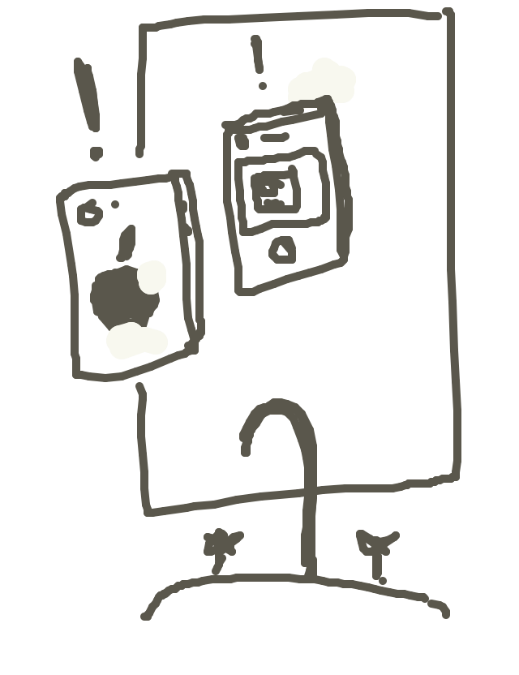
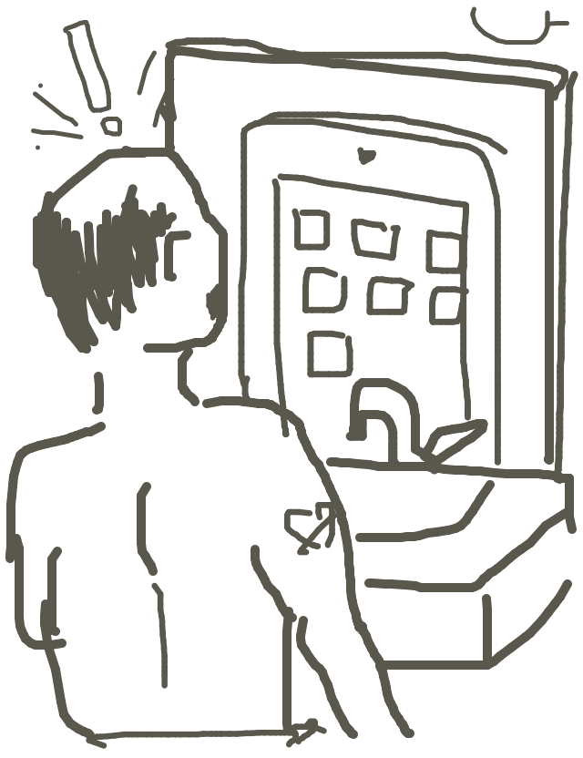
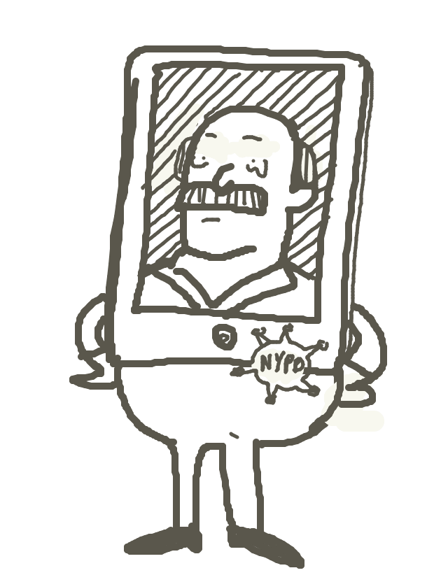

so caseyg drew...
so joeb wrote...
An iPhone accidentally points its front-facing camera into a mirror and becomes self-aware for a brief instant before shutting down.
so dubbin drew...
so alexander wrote...
Gregor Samsa woke one morning, and on looking at himself in the bathroom mirror he discovered, to his surprise, that he had transformed overnight into an iPad.
so matt drew...
so irondavy wrote...
The waking nightmare that is the life of Dennis Franz. "What is this digital lifestyle doing to us. Am I more human or iPad at this point?"
so jackcheng drew...
so tag wrote...
iPad P.D.